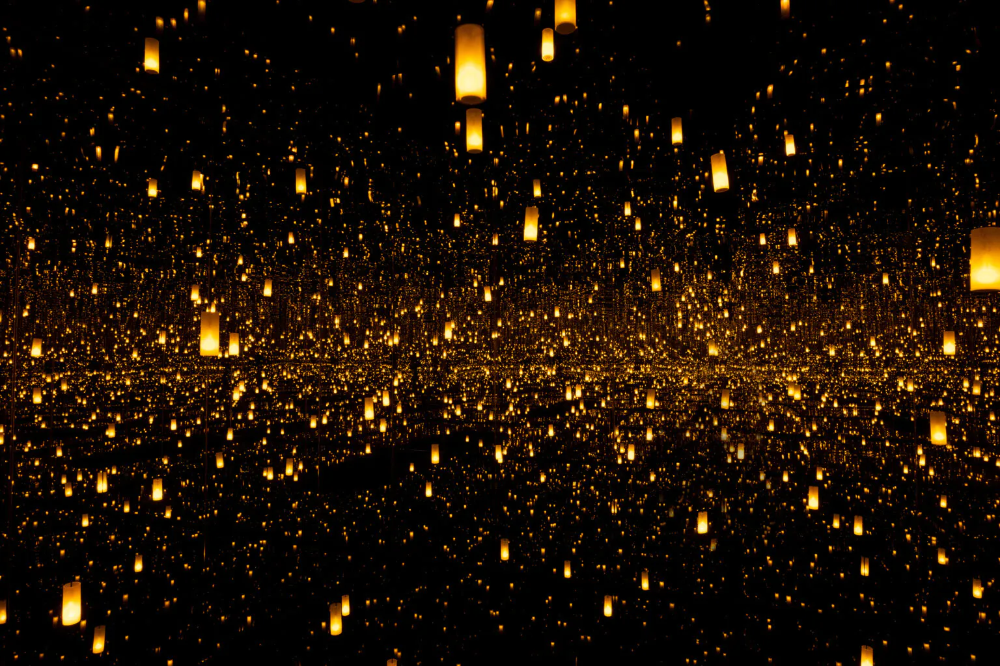

Sonho, repetição e uma pintura que ultrapassa a superfície.
Começamos esta aula em memória de Yayoi Kusama, que
morreu em 14 de agosto de 2026, aos 97 anos. A abertura não
transforma sua vida em explicação definitiva de sua obra, nem usa
sonho, sofrimento psíquico ou neurodivergência como diagnóstico
estético.
Ela nos permite partir de uma questão que atravessa a Aula 5: como
uma experiência recorrente pode se tornar procedimento formal, sem
que a obra se reduza à interioridade da artista? Em
Infinity Nets (1) (1958), redes de pinceladas minúsculas
atravessam a tela. De perto, vemos variação, gesto, espessura e
sombra; à distância, a superfície parece não terminar.
Hessel aproxima essa experiência de olhar lento às pinturas de
Agnes Martin, mas insiste numa diferença material: em
Kusama, as marcas parecem dobrar, lamber e avançar sobre a
superfície. A repetição não é decoração. É escala, duração,
textura e produção de mundo.
As obras em Inhotim, 2023
Na inauguração da Galeria Yayoi Kusama, no Instituto Inhotim,
em 2023, a repetição deixa a superfície pictórica e organiza um
ambiente para quem o atravessa. As duas instalações permitem tornar
visível, no Brasil, a passagem entre o procedimento que Hessel
identifica nas redes e uma experiência espacial mediada por
arquitetura, instituição e documentação.
Na sala doméstica escurecida, os pontos luminosos desfazem a
estabilidade de objetos, parede e corpo visitante. A repetição
não representa infinitude: produz uma condição de percepção em
que figura e fundo deixam de se separar com nitidez.
Foto: Daniel Mansur, conforme página do Instituto
Inhotim.

Aftermath of Obliteration of Eternity
Yayoi Kusama, 2009. Espelho, madeira, plástico,
acrílico, LED e alumínio.
Os espelhos e as luzes tornam a multiplicação uma experiência
temporal e corporal. Em vez de uma imagem que se contempla à
distância, a obra compromete a escala do visitante com uma
espacialidade aparentemente sem fim.
Imagem: cortesia de Bellagio, conforme página do Instituto
Inhotim.
Para discutirAs duas instalações não são apenas
extensões espetaculares da pintura. O que se altera quando a repetição
depende de luz, espelho, mobiliário, percurso e presença do visitante?
Que papel o espaço institucional desempenha nessa experiência?
Posição da aulaFalar de Kusama a partir de sonho não
nos autoriza a procurar uma chave psicológica para a obra. Permite
discutir como artistas transformam experiências, memórias e visões em
decisões de forma, material, escala e circulação.
Informações e atribuições
Hessel apresenta Infinity Nets (1), 1958, como pintura a
óleo sobre tela e lê as redes por sua repetição tátil e espacial. A
data de morte está registrada no
site oficial de Yayoi Kusama. Informações materiais, imagens e créditos das instalações em
Inhotim:
Instituto Inhotim, Galeria Yayoi Kusama.
Onde estamos no curso
Da memória e do aparecimento à disputa pelos tempos da
pintura.
As Aulas 3, 4, 5 e 6 formam um bloco que desloca a pergunta da
obra isolada para as condições de sua
presença pública. A Aula 3 examinou como
memória, violência e arquivo são materialmente
construídos. A Aula 4 perguntou quem pode aparecer e sob
quais regimes de imagem, narrativa e instituição.
Agora, a Aula 5 pergunta como a pintura reinscreve essas disputas
no tempo: o que acontece quando tradição, cultura de
imagens, desejo e escala não ficam atrás da obra,
mas passam a operar dentro de sua superfície?
Seis teses de trabalho
Aula 1
Autonomia, corpo e participação
A autonomia da obra torna-se insuficiente quando matéria,
duração e corpo participante passam a
constituí-la.
Aula 2
Autoria, trabalho e instituição
Autoria é uma posição em disputa, não
uma origem individual intacta.
Aula 3
Contramonumento, colonialidade e memória
Uma obra crítica não apenas lembra a
violência: altera as condições sob as quais
ela pode ser vista.
Aula 4
Figuração, contra-arquivo e aparecimento
Figurar não é apenas tornar alguém
visível: é fabricar as condições de
sua presença e autoridade.
Aula 5 · estamos aqui
Pintura, imagem e temporalidade
A pintura contemporânea não retorna ao passado: faz
dele uma força em disputa no presente.
Aula 6
Historiografia, cânone e constelação
A história da arte é uma infraestrutura que
distribui valor, presença e esquecimento.
Proposição de trabalho
A pintura contemporânea não retorna ao passado. Ela faz
do passado uma força em disputa no presente.Pergunta: quando uma referência histórica deixa de ser
ornamento e passa a reorganizar imagem, desejo, corpo e
temporalidade?
Notas de condução
Esta aula não pergunta se a pintura sobreviveu ao digital, ao
vídeo ou à cultura de telas. Essa pergunta separa os
meios antes de observar como as obras os atravessam. Em Fadojutimi,
Yukhnovich e Critchlow, tradições, imagens de massa,
regimes de desejo, escala e histórias de exclusão
tornam-se matéria ativa, instável e conflituosa.
Hessel: “Novas Mestras”
Uma categoria que abre e limita uma história.
Hessel reúne três pintoras britânicas, nascidas
nos anos 1990, “cujo olhar se dirige tanto para o futuro
quanto para a história”. O agrupamento reabre uma
palavra historicamente reservada ao cânone, mas também
precisa ser examinado: que presente geográfico, racial,
institucional e pictórico ele seleciona?
Pintura e presente
Tecnologia não é assunto isolado.
Para Hessel, as três artistas injetam nova vida na pintura a
óleo, confrontam questões contemporâneas e
trabalham num mundo repleto de tecnologia. Não há
oposição simples entre pintura lenta e imagem
digital rápida: videoclipes de R&B, filmes, animes,
televisão, publicidade e cultura de telas entram no
processo de pintar.
Jadé Fadojutimi
Existe um mundo glorioso. O nome dele? A Terra dos Fardos
Sustentáveis
2020.
Pintura como coisa com vida própria
“Acho que encaro a pintura como uma coisa com vida
própria. E eu a invejo, porque ela tem muito
caráter.”
JADÉ FADOJUTIMI, 2020, citada por Hessel.
“Vida própria” não deve ser
psicologizada como extensão da interioridade da artista.
Indica resistência material e formal: camadas de cor, ritmo
e espessura que não se reduzem a um plano anterior. A
pintura pode sugerir planeta, organismo, água, paisagem,
noite, visão microscópica ou cósmica, sem se
estabilizar numa identificação.
PerguntaO que as categorias de
figuração e abstração deixam de
perceber quando exigem que a imagem escolha entre motivo
reconhecível e ausência de figura?
Nem abstração nem figuração como destino
Hessel aproxima a energia de Fadojutimi de Joan Mitchell, Lee
Krasner e Helen Frankenthaler, mas afirma que suas pinturas
não são estritamente abstratas nem figurativas. A obra
pressiona essas categorias por camadas, bastão de
óleo, garfos, cabo de pincel, som, atrito e
duração. Trilhas de filmes e animes não
ilustram o presente: participam da construção da
superfície.
Consciência do presente, colisão com o passado
“Minhas pinturas parecem ter consciência do presente
enquanto colidem com o passado”, diz Fadojutimi, citada por
Hessel. A hipótese da aula é que a pintura não
representa o presente, mas produz uma experiência temporal sem
reconciliação. A linguagem
“utópica” usada por Hessel deve ser testada: a
abundância de cor pode ser afirmativa, mas também
contém colisão, opacidade e fricção.
Flora Yukhnovich
O rococó dentro da cultura de imagens
Hessel identifica em Quente, molhado e selvagem uma
reencarnação do motivo histórico dos
banhistas, entre movimento e quietude, figuração e
abstração. A tarefa não é encontrar
figuras escondidas: é observar como a cena chega como
dispersão de matéria, cor e gesto.
Amarelos amanteigados, rosas cremosos e azuis açucarados
associam pintura, consumo, corpo e desejo. A superfície
pode operar como prazer visual e como problema de excesso.
Quente, molhado e selvagem
2020.
Diálogo temporal ou reciclagem ornamental?
Hessel vincula Yukhnovich ao rococó, às
fêtes galantes, a cenas de artistas homens
consagrados, a videoclipes de R&B, ao consumo e à
mídia hipersexualizada. “A pintura é uma forma
de dar sentido às imagens que nos bombardeiam a cada
minuto”, diz Yukhnovich, citada por Hessel. Pintura não
foge do digital: processa suas imagens como matéria, falha,
espessura e tempo.
Olhar, desejo e forma do excesso
Uma referência histórica é crítica apenas
se altera condições de olhar no presente. A obra
dissolve banhistas e erotismo rococó em velocidade e
ambiguidade; faz corpo, ar, água e pintura disputarem
legibilidade. A comparação com Mickalene Thomas ajuda:
Thomas reconfigura uma composição específica;
Yukhnovich dissolve um repertório inteiro de atmosfera,
charme e erotismo.
Somaya Critchlow
Figura segurando uma pequena xícara de chá
2019.
Miniatura, nudez e disputa da escala
Hessel observa que mulheres negras nuas aparecem com nobreza
comparável às figuras de antigos mestres, em
pinturas por vezes “de bolso”. A
contradição é decisiva: pequena escala e
presença imperiosa. O cânone costuma ligar
ambição a monumentalidade, assunto histórico
e gesto grandioso; Critchlow concentra autoridade, desejo e
história sem competir pelos mesmos códigos.
PerguntaComo postura, objetos, superfície,
fundo e escala organizam uma cena que se recusa a ser consumida
como nu tradicional?
Contra a miniatura domesticada
Critchlow dialoga com paleta, posturas e autoridade dos
séculos XVII e XVIII; mobiliza xícaras,
relógios, cadeiras e sapatos vitorianos; aproxima antigos
mestres de Love & Hip Hop e David Lynch.
Televisão, cultura pop, objeto vitoriano e miniatura produzem
um tempo espesso. A relação com o cânone
não é reverência: é disputa de autoridade
numa tradição que reservou nobreza e centralidade a
outras figuras.
Comparação
Três escalas do presente pictórico
Jadé Fadojutimi
Mundo cósmico e microscópico; cor e textura
desorganizam categorias. O presente é colisão com o
passado.
Flora Yukhnovich
Tela, circulação de imagens e excesso; rococó
e mídia desorganizam o olhar.
Somaya Critchlow
Pintura íntima e concentrada; miniatura e nu deslocam
autoridade histórica.
O presente não aparece como data: aparece como problema de
escala, circulação e tempo.
Nota de condução
Escala não é apenas medida física. Em
Fadojutimi, passa entre planeta e célula; em Yukhnovich,
envolve a avalanche de imagens e a dimensão da tela; em
Critchlow, é intensidade numa pintura pequena. Peça
que a turma teste a afirmação de que Critchlow pode
ser tão monumental quanto uma instalação em
escala urbana.
Judith Scott: um núcleo da aula
Fibra, ocultamento e uma recusa da classificação.
Judith Scott não entra como exceção
biográfica nem como ilustração de uma categoria.
Sua prática obriga a aula a tratar fibra, objeto, opacidade e
reconhecimento como problemas formais e institucionais.
Hessel situa Judith Scott entre as grandes inovadoras da fibra.
Suas esculturas envolvem cadeiras, rodas, carrinhos, fechaduras e
outros objetos encontrados em camadas de fios, tecidos e fibras. A
operação não ornamenta um objeto anterior:
transforma peso, volume, cor, tato e tempo de trabalho em uma
forma cuja estrutura pode permanecer ocultada.
O livro também registra a longa
institucionalização de Scott, sua passagem pelo
Creative Growth Art Center e o início de sua
produção em fibra. Esses dados são
historicamente indispensáveis, mas não constituem
uma chave que esgote a obra. O problema crítico é
como essa trajetória foi mobilizada para
classificá-la, e como a obra excede tais
classificações.
Pergunta de análiseO que muda quando deixamos
de perguntar “o que está escondido dentro?” e
passamos a perguntar como o envolver, ocultar e tornar
inacessível produzem a forma da obra?
Três vias para discutir Judith Scott
Matéria: fios, tecidos e objetos cotidianos
não são suporte neutro; eles produzem densidade, cor,
textura e resistência.
Tempo: enrolar, atar, cobrir e acumular tornam a
duração uma qualidade visível, sem que ela se
converta em relato psicológico.
Instituição:
“autodidata”, “arte outsider” ou “arte
da deficiência” podem organizar acesso e reconhecimento,
mas não devem substituir a análise formal nem reduzir
a artista a uma identidade administrada.
Um segundo contraponto
Soheila Sokhanvari: miniatura, alegoria e memória
política.
As miniaturas em têmpera de ovo sobre velino de Soheila
Sokhanvari aproximam técnica histórica,
memória do Irã pré-revolucionário e
alegoria política. A própria artista relaciona a
prática à magia, ao simbolismo e ao realismo
mágico como formas de produzir deslizamento de sentido
diante de discursos totalitários.
Ela entra em diálogo direto com Somaya Critchlow: miniatura
não como formato menor, mas como concentração
de autoridade, imagem e tempo. A questão é como uma
técnica herdada pode operar contra a
normalização política da memória.
Pinturas em têmpera: uma técnica
associada à iluminação e à miniatura
torna-se imagem contemporânea e politicamente situada.
Escultura: em Moje Sabz, taxidermia, corpo
animal, tinta automotiva e a esfera azul-turquesa recusam uma
separação estável entre vestígio,
artifício e desejo.
Touching the Void: a série parte dos
espaços negativos de fotografias familiares da artista. A
ausência não é apenas tema: organiza o campo da
imagem.
Desenhos em petróleo bruto: o material
carrega simultaneamente relações econômicas,
políticas, ecológicas e sociais. Aqui, meio e mensagem
não se separam.
Passaportes: objetos encontrados e documentos
vencidos deslocam identidade, fronteira e pertencimento para uma
forma material e administrativa.
Pergunta de análiseComo uma prática que
atravessa miniatura, taxidermia, petróleo e documento impede
que o político seja tratado apenas como assunto representado?
Pintura e fotografia
Ecologia de imagens, não rivalidade de meios.
Fadojutimi trabalha com som, filmes e animes. Yukhnovich formula a
pintura diante de videoclipes, mídia e bombardeio
imagético. Critchlow articula televisão, cinema e
tradição pictórica. As pinturas não
respondem passivamente às imagens técnicas:
selecionam, condensam e transformam seus ritmos e desejos.
Seminário de obra
Tradição ativada ou tradição neutralizada?
Em grupos, escolham uma proposição e defendam-na com
duas artistas:
Uma referência histórica só se torna
crítica quando altera a posição de quem olha.
A pintura contemporânea produz presente ao tornar
visível a colisão de tempos, não ao abandonar o
passado.
Escala é uma relação de autoridade entre obra,
corpo e instituição, e não uma medida
física.
Uma técnica herdada pode resistir à
normalização política da memória sem se
tornar ilustração de uma tese.
FormatoTese → operação de pintura
ou material → passagem de Hessel ou fonte atribuída →
limite da tese → reformulação.
Critério de precisão
Escolham um detalhe como evidência: cor, textura, motivo,
escala, objeto, referência ou título. A
tradição não pode permanecer abstrata. O limite
pode recair sobre a própria categoria “Novas
Mestras”: ela reabre autoridade, mas concentra um recorte
britânico e pictórico.
Síntese e passagem
Jadé Fadojutimi transforma pintura em mundo instável
de matéria viva e colisão temporal. Flora Yukhnovich
torna rococó, mídia e consumo uma disputa sobre
olhar. Somaya Critchlow desloca miniatura, nudez e
tradição de mestria para outra posição
de autoridade.
A aula não termina ao provar que essas artistas são
importantes. Ela pergunta que formas de importância,
transmissão, mestria e reconhecimento estão em
operação, e quem as define.
Referência e créditos
Leitura-base: HESSEL, Katy.
A história da arte sem os homens. Parte Cinco:
“As novas mestras” e “Onde estamos agora?”.
Obras: Jadé Fadojutimi,
Existe um mundo glorioso. O nome dele? A Terra dos Fardos
Sustentáveis
(2020); Flora Yukhnovich, Quente, molhado e selvagem (2020);
Somaya Critchlow,
Figura segurando uma pequena xícara de chá
(2019).
As informações, citações e a categoria
“Novas Mestras” são de Hessel. As teses,
comparações e perguntas de seminário pertencem ao
desenho didático da disciplina.